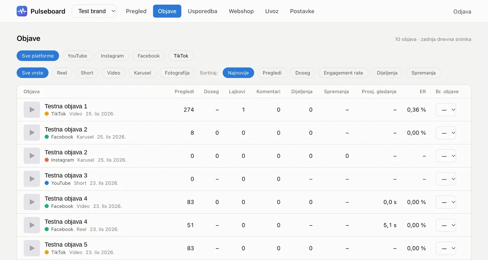
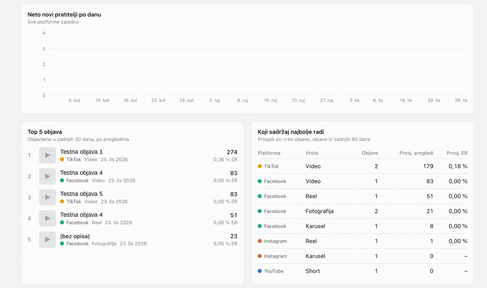
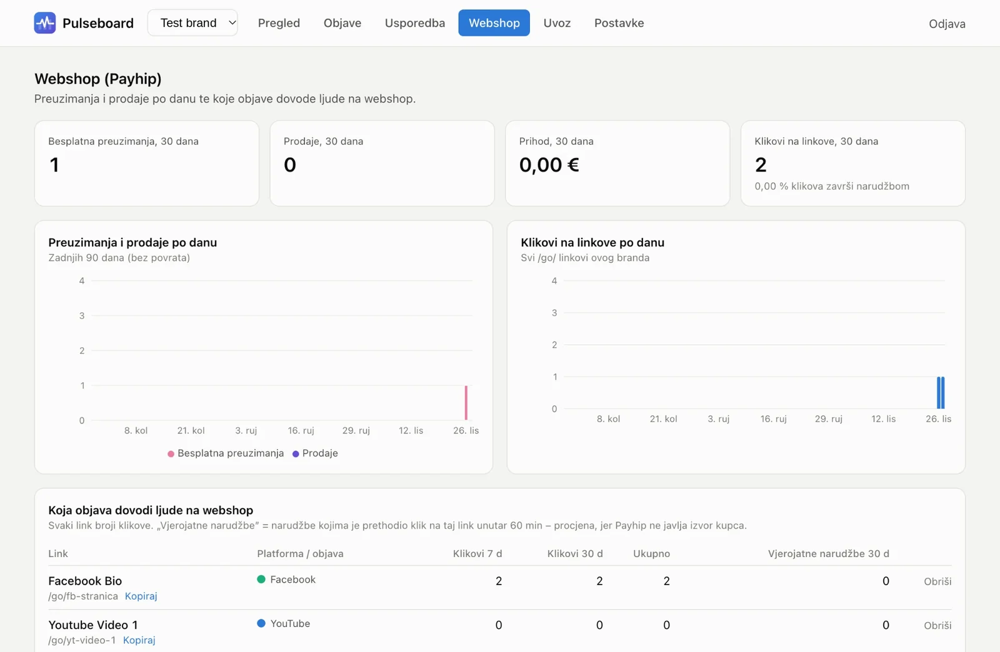
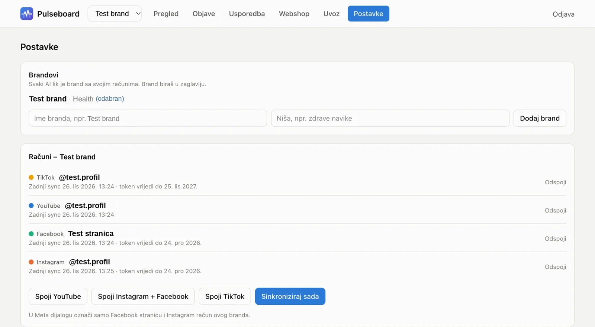

Pulseboard
Pulseboard è un'applicazione web che riunisce in un unico posto le statistiche di Facebook, Instagram, TikTok e YouTube, per più profili contemporaneamente. Invece di aprire ogni social separatamente, il titolare vede in un'unica dashboard come crescono i follower, quante visualizzazioni e quanta interazione ha avuto ogni profilo, confronta i post e verifica quali post portano visitatori al negozio online. I numeri si aggiornano automaticamente durante la giornata e lo storico viene conservato.

Sfida
Chi gestisce più profili su quattro social network deve cercare le statistiche in quattro posti, in quattro interfacce diverse e con numeri che ogni piattaforma calcola a modo suo. Confrontare come è andato lo stesso video su Instagram e TikTok, o quale profilo cresce più in fretta, significava ricopiare i dati a mano in un foglio di calcolo. La sfida era riunire tutti questi dati in un unico posto, renderli confrontabili e conservarne lo storico.
Soluzione
Abbiamo sviluppato un'applicazione web privata che si collega a Facebook, Instagram, TikTok e YouTube tramite le loro API ufficiali, con accesso in sola lettura. Ogni dieci minuti circa raccoglie e salva automaticamente le statistiche di tutti i profili collegati, così la crescita si può seguire nel tempo. La dashboard mostra i follower al giorno, le visualizzazioni a settimana e il tasso di interazione per ogni profilo, l'elenco di tutti i post con visualizzazioni, reazioni e tempo medio di visione e il confronto dello stesso video sui diversi social. L'accesso è protetto da login.
Presentazione del progetto



Caratteristiche principali
Tutti i social in un unico posto
Facebook, Instagram, TikTok e YouTube in un'unica dashboard, per più profili insieme.
Crescita e interazione
Follower al giorno, visualizzazioni a settimana e tasso di interazione per ogni profilo.
Statistiche dei post
L'elenco di tutti i post con visualizzazioni, like, commenti, condivisioni e tempo medio di visione.
Confronto tra social
Il confronto dello stesso video pubblicato su social diversi.
Vendite del negozio online
Download e vendite del negozio online (Payhip) e link tracciati che mostrano quale post porta clienti.
Sincronizzazione automatica
Follower e nuovi post si aggiornano automaticamente ogni 10 minuti, lo storico viene conservato e l'app ha accesso in sola lettura.
Ti serve qualcosa di simile?
Raccontaci il tuo progetto e ti proporremo soluzione, tempi e prezzo.